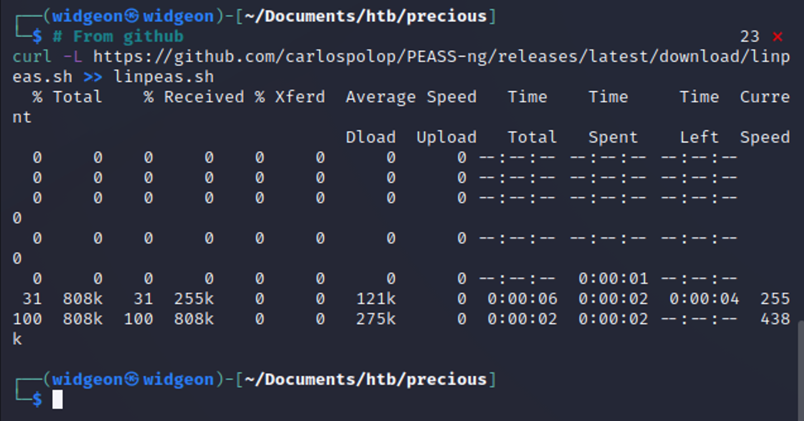

February 5, 2023
Precious
Tools Needed: Nmap, Gobuster, NetCat and Linpeas

Step 1: Start off with an Nmap Scan
nmap -sV -sC <IP ADDRESS> -oA <FILE NAME>
Add "precious" to the /etc/hosts file. This is very common in Hack The Box and will save you some headaches later on.

We can see that port 80 is open, which likely means there's a website.
When a CTF challenge has a website, I immediately think “Gobuster and Burp Suite.” Gobuster is a great tool for enumerating websites. It allows us to scan for potential directories like www.<WEBSITE>.com/dev, as well as virtual hosts such as dev.<WEBSITE>.com.
This will scan for any directories after the main website:
gobuster dir -u http://precious.htb/ -w /usr/share/wordlists/dirbuster/directory-list-2.3-medium.txt
This one will scan for any virtual hosts:
gobuster vhost -u http://precious.htb/ -w /usr/share/seclists/Discovery/DNS/subdomains-top1million-5000.txt --append-domain
Unfortunately, both Gobuster scans found nothing. We still know very little about this box. Visiting http://precious.htb takes us to a page that’s very empty — the only thing we can do is convert a webpage to a PDF.

We can capture the request using Burp Suite.
Nothing happens when using a remote host, but we can try from our own machine. Set up a quick server to test:
python3 -m http.server


Looks like we can get some more information from this.

Htmltopdf 0.12.6, Ruby... rubies are precious — get it?
Googling around for "Ruby PDF kits" leads us to this GitHub link:
https://github.com/CyberArchitect1/CVE-2022-25765-pdfkit-Exploit-Reverse-Shell

I used Notepad++ to edit the script and plug in the required values.

You'll need to edit the script with your IP and the machine's IP/webpage in the appropriate places. Be sure to sanitize it by replacing all spaces with %20. This prevents injection attacks, where malicious characters (like ", >, or }) could break or hijack the command.
For this script to work, you'll need three things:
- A netcat listener
- Your own HTTP server
- A curl command to trigger the exploit
Once that's all set up, we should have access.


We're in — but not as user just yet. Let's use LinPEAS to start some enumeration on the machine.


Not much from LinPEAS that screams low-hanging fruit, so let’s do some manual enumeration.
Running ls -al reveals a hidden folder called .bundle. Inside, there's a config file with a user password!

We can use su henry and our new password to log in as the user and grab the user flag.
We can run Ruby as root, but only on the update_dependencies.rb file. If it was just Ruby, we’d already be root!

Reading the update_dependencies.rb file reveals something interesting...
The script reads from a file named dependencies.yml without an absolute path, meaning if we can create a file by that name in our current directory, it’ll get used. Googling “ruby yaml exploit” led me to this blog post:
Stratum Security - YAML Deserialization RCE
I edited a .yml file to include a command to read the root flag.

Then, running our sudo command, we got command execution and read the root flag!

Success! Precious has been pwned üòé